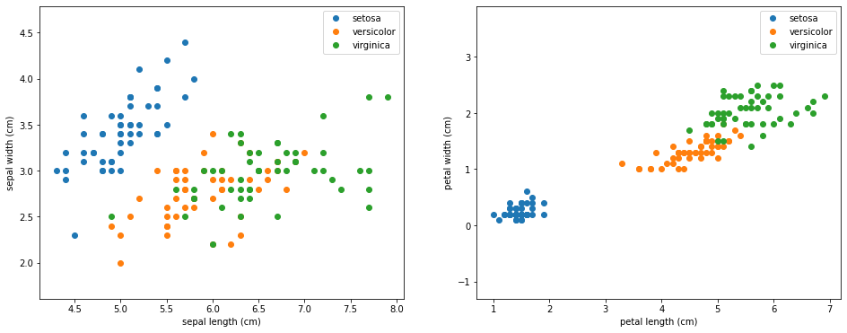
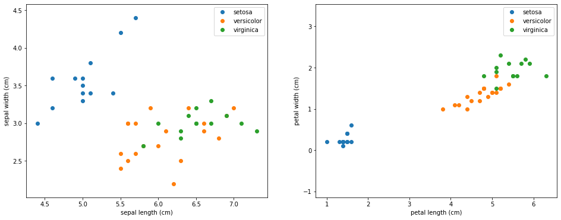
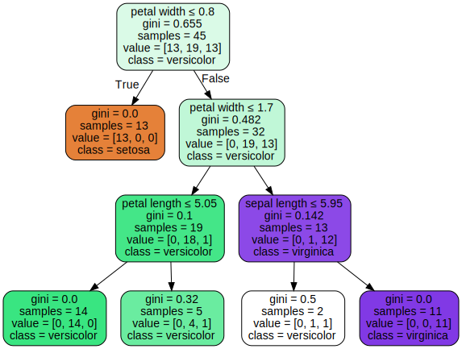

Implementasi Decision Tree Iris Dataset (Tugas 6)
Contents
Implementasi Decision Tree Iris Dataset (Tugas 6)#
Konsep Decision Tree#
Decision tree merupakan sebuah algoritma yang dapat digunakan untuk klasifikasi dan regresi. Kelebihan menggunaka Decision Tree
Sederhana untuk dipahami dan diimplementasikan
Membutuhkan sedikit persiapan data
Kekurangan menggunakan Decision Tree:
Prediksi Decision tree tidak atau kontinu.
Decision Tree dapat menjadi tidak stabil karena variasi kecil dalam data
Rumus Yang Digunakan#
\[Gain = 1 - \sum \limits_{i=1}^{n} {p^2 (c_{i})} \]
Atau bisa juga menggunakan rumus entrhopy \begin{align} Entropy(D_1) = -\sum_{i=1}^m p_i \ log{_2} \ p_i \end{align}
Dimana :
P = Probabilitas
Import Library#
import numpy as np
from sklearn.datasets import load_iris
from sklearn.model_selection import train_test_split
from sklearn.preprocessing import OneHotEncoder
from sklearn import tree
import graphviz
import matplotlib
import matplotlib.pyplot as plt
from sklearn.metrics import precision_score
from sklearn.metrics import recall_score
Get iris dataset#
iris = load_iris()
X = iris['data']
y = iris['target']
names = iris['target_names']
feature_names = iris['feature_names']
Modifikasi dataset#
# One hot encoding
enc = OneHotEncoder()
Y = enc.fit_transform(y[:, np.newaxis]).toarray()
# Modifying the dataset
X[y==1,2] = X[y==1,2] + 0.3
# Split the data set into training and testing
X_train, X_test, Y_train, Y_test = train_test_split(
X, Y, test_size=0.5, random_state=2)
# Decreasing the train set to make things more interesting
X_train = X_train[30:,:]
Y_train = Y_train[30:,:]
Visualisasi Dataset#
plt.figure(figsize=(16, 6))
plt.subplot(1, 2, 1)
for target, target_name in enumerate(names):
X_plot = X[y == target]
plt.plot(X_plot[:, 0], X_plot[:, 1], linestyle='none', marker='o', label=target_name)
plt.xlabel(feature_names[0])
plt.ylabel(feature_names[1])
plt.axis('equal')
plt.legend();
plt.subplot(1, 2, 2)
for target, target_name in enumerate(names):
X_plot = X[y == target]
plt.plot(X_plot[:, 2], X_plot[:, 3], linestyle='none', marker='o', label=target_name)
plt.xlabel(feature_names[2])
plt.ylabel(feature_names[3])
plt.axis('equal')
plt.legend();

plt.figure(figsize=(16, 6))
plt.subplot(1, 2, 1)
for target, target_name in enumerate(names):
X_plot = X_train[Y_train[:,target] == 1]
plt.plot(X_plot[:, 0], X_plot[:, 1], linestyle='none', marker='o', label=target_name)
plt.xlabel(feature_names[0])
plt.ylabel(feature_names[1])
plt.axis('equal')
plt.legend();
plt.subplot(1, 2, 2)
for target, target_name in enumerate(names):
X_plot = X_train[Y_train[:,target] == 1]
plt.plot(X_plot[:, 2], X_plot[:, 3], linestyle='none', marker='o', label=target_name)
plt.xlabel(feature_names[2])
plt.ylabel(feature_names[3])
plt.axis('equal')
plt.legend();

iristree = tree.DecisionTreeClassifier(max_depth=3, criterion='gini', random_state=0)
iristree.fit(X_train, enc.inverse_transform(Y_train))
feature_names = ['sepal length', 'sepal width', 'petal length', 'petal width']
dot_data = tree.export_graphviz(iristree, out_file=None,
feature_names=feature_names,
class_names=names,
filled=True, rounded=True,
special_characters=True)
graph = graphviz.Source(dot_data)
display(graph)

Hasil Predict#
iristrainpred = iristree.predict(X_train)
iristestpred = iristree.predict(X_test)
# train precision:
display(precision_score(enc.inverse_transform(Y_train), iristrainpred.reshape(-1,1), average='micro', labels=[0]))
display(precision_score(enc.inverse_transform(Y_train), iristrainpred.reshape(-1,1), average='micro', labels=[1]))
display(precision_score(enc.inverse_transform(Y_train), iristrainpred.reshape(-1,1), average='micro', labels=[2]))
# test precision:
display(precision_score(enc.inverse_transform(Y_test), iristestpred.reshape(-1,1), average='micro', labels=[0]))
display(precision_score(enc.inverse_transform(Y_test), iristestpred.reshape(-1,1), average='micro', labels=[1]))
display(precision_score(enc.inverse_transform(Y_test), iristestpred.reshape(-1,1), average='micro', labels=[2]))
1.0
0.9047619047619048
1.0
1.0
0.7586206896551724
0.9473684210526315